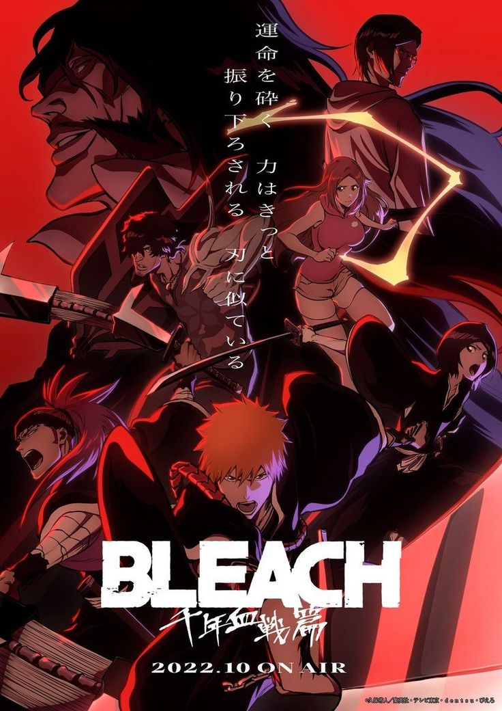
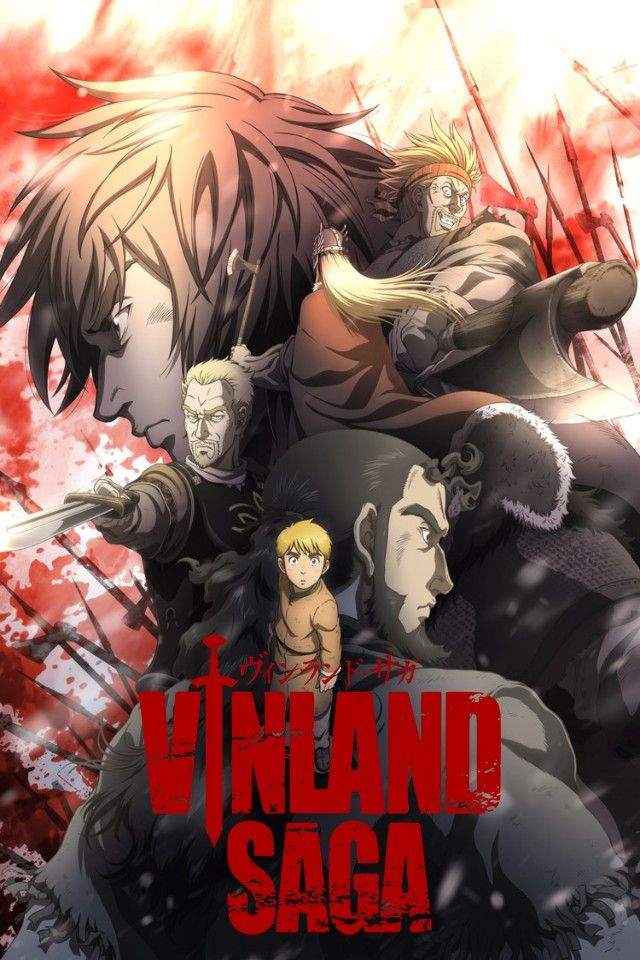
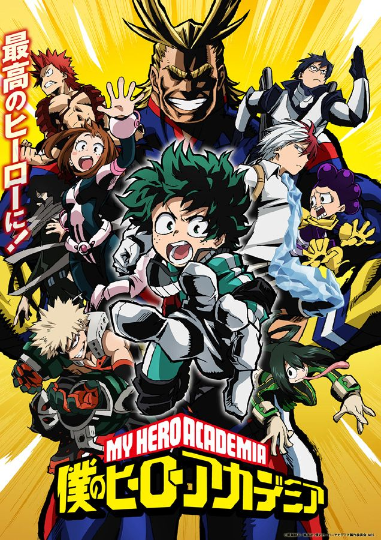
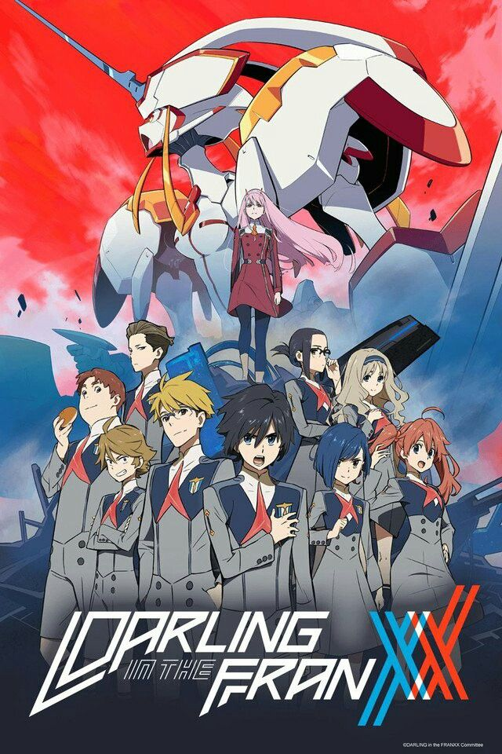
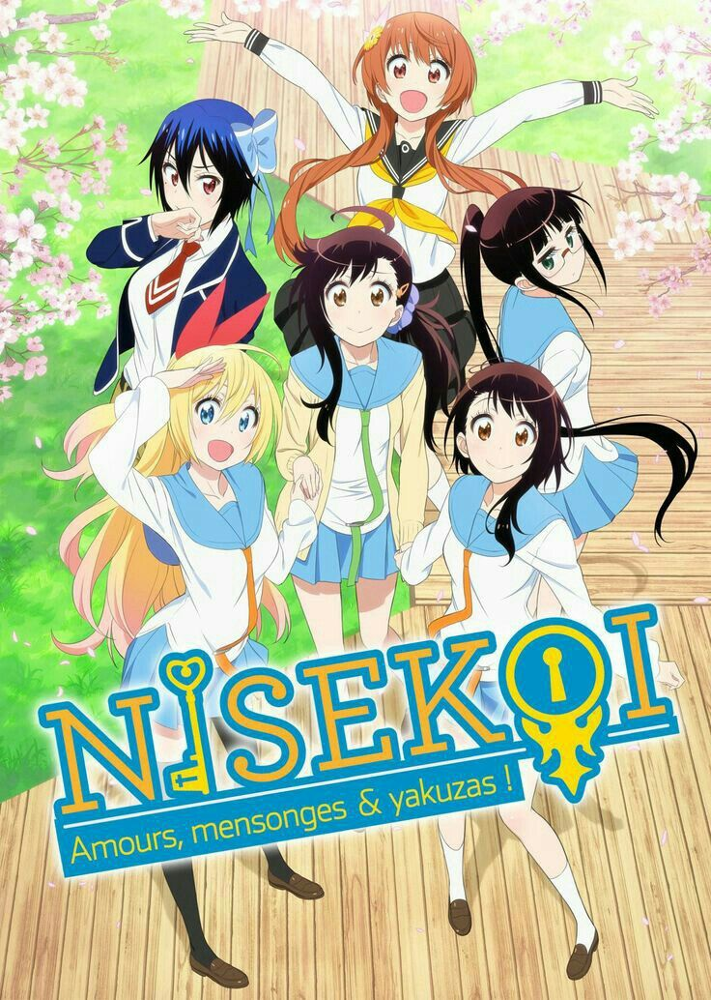

TOP 1
Sword Art Online

Sword Art Online is a sci-fi action anime about players trapped inside a virtual reality MMORPG. If they die in the game, they die in real life.
TOP 2
Tokyo Ghoul
 [2014].jpg)
Tokyo Ghoul is a dark fantasy anime about a college student named Ken Kaneki who becomes a half-ghoul after a deadly encounter.
TOP 3
Bleach

Bleach is a supernatural action anime about Ichigo Kurosaki, a teenager who accidentally gains the powers of a Soul Reaper.
TOP 4
Jujutsu Kaisen

Jujutsu Kaisen is a supernatural action anime about Yuji Itadori, a high school student who becomes involved in the world of curses after swallowing a cursed object.
TOP 5
Vinland Saga

Vinland Saga is a historical action anime set during the Viking era. It follows Thorfinn, a young warrior who seeks revenge against the mercenary who killed his father.
TOP 6
My Hero Academia

My Hero Academia is a superhero anime about Izuku Midoriya, a boy born without powers who inherits a powerful Quirk and trains at a hero academy
TOP 7
Demon Slayer

Demon Slayer (Kimetsu no Yaiba) is a fantasy anime about Tanjiro Kamado, a boy who joins the Demon Slayer Corps after his family is killed and his sister is turned into a demon
TOP 8
Darling in the Franxx

Darling in the Franxx is a sci-fi anime about teens piloting giant robots in a dystopian world.
TOP 9
Fairy Tail

Fairy Tail is a fantasy anime about a wizard guild that goes on magical adventures and fights powerful enemies through friendship and teamwork.
TOP 10
Nisekoi

Nisekoi is a romantic comedy anime about a fake relationship between two students from rival families.